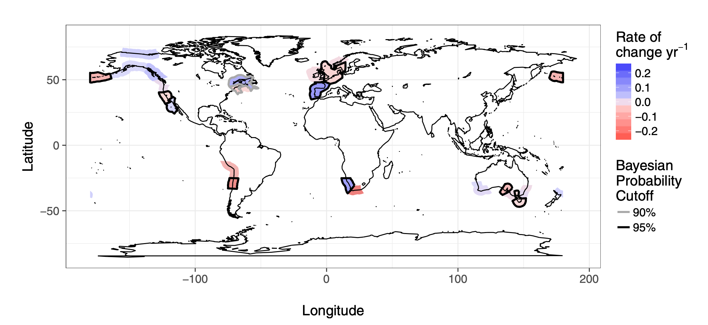

Coastal Ecology at Scale

The planet is undergoing enormous changes driven by human influences. At the same time, ecological systems are mind-bogglingly complex and subject to all manner of jukes and bounces due to environmental noise. This makes detecting change and then attributing it to cause an incredibly difficult task.
One of the principle challenges in learning about large-scale change - from the regional to global scale - is expanding one’s scale of inference. One cannot understand nature without having a solid sense of the natural history of one or a handful of sites. Knowing and understanding the stories behind chage in, say, a single kelp forest is a keyhole through which we can peer and understand the wider world. At the same time, when we open the door to see the entire landscape arrayed in front of us, we learn that what we have learned is one piece of a much larger puzzle of the natural world.
In our lab, we approach global change biology through the lense of data synthesis of long-term and large-scale data sets. We work to bring together many different data layers - from modeled outputs to remote sensing to visual surveys aggregated across many studies - in order to learn about how the world has changed. We employ causal statistical approaches in order to either attribute change to particular drivers, or to interpolate and learn about general change across large unsampled spatial scales.
We bring this approach to coastal ecosystems, but also work with researchers in other systems as well in order to build a broad understanding of global change that is necessary to tackle the next century of environmental issues.
Relevant References
-
(2026)
Global ocean indicators: Marking pathways at the science-policy nexus.
Marine Policy.
184:
106922.
-
(2025)
New Technologies for Monitoring Coastal Ecosystem Dynamics.
Annual Review of Marine Science.
17:
409-433.
-
(2019)
The geography of biodiversity change in marine and terrestrial assemblages.
Science.
366:
339-345.
-
(2019)
Toward a Coordinated Global Observing System for Seagrasses and Marine Macroalgae.
Frontiers in Marine Science.
6:
NA.
-
(2017)
Human activities influence the direction and magnitude of local biodiversity change over time.
bioRxiv.
NA:
162362.
-
(2016)
Estimating local biodiversity change: a critique of papers claiming no net loss of local diversity.
Ecology.
97:
1949-1960.
-
(2016)
Global patterns of kelp forest change over the past half-century.
Proceedings of the National Academy of Sciences.
113:
13785-13790.
-
(2011)
Climate driven increases in storm frequency simplify kelp forest food webs.
Global Change Biology.
17:
2513-2524.
-
(2007)
Invasions and extinctions reshape coastal marine food webs..
PloS one.
2:
e295.